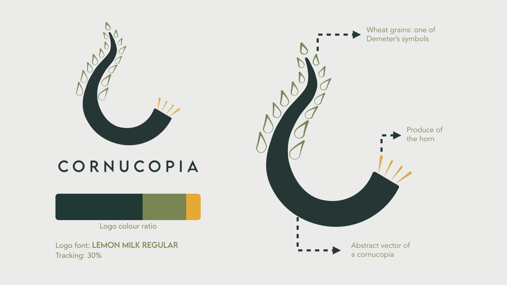

Inspired by Demeter’s mythical horn that overflows with abundance, Cornucopia was born from a desire to share the love of Greek myths with the world. We believe that food is a universal language, capable of transporting you to different times and places. Every dish becomes a portal to a story, inviting you to delve deeper into the captivating world of Greek mythology. We want to use our restaurants as communal spaces where people can gather, share their passion for myths and form a fun community over a good meal.
To be a hub for Greek mythology enthusiasts and build a community with people invested in the theme and who want to connect with other people who also share the same interests as them over a unique dining experience.
To offer a menu inspired by mythology using storytelling to create innovative dishes. We are catered towards people who are enthusiastic about Greek culture and are open to involving themselves more in the community by connecting through food.
To build a diverse community that connects people who are interested in Greek mythology and culture and want to learn more about it through new innovative food.
Click here to know more about Cornucopia’s brand guidelines.
Click here to see more of the brand environment.